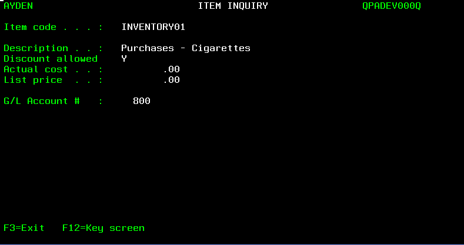
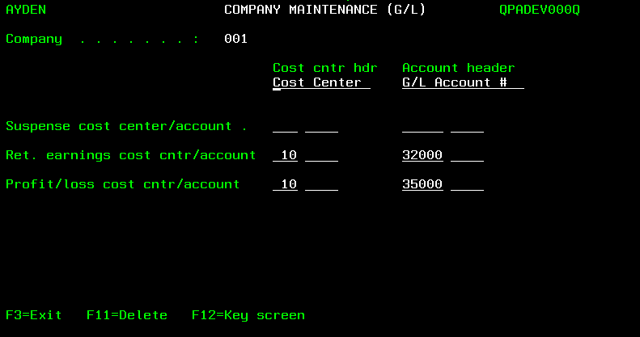
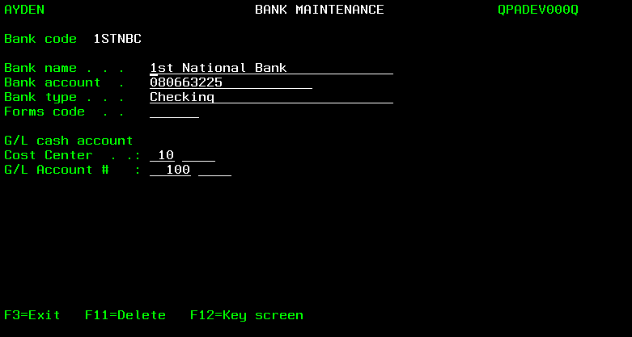
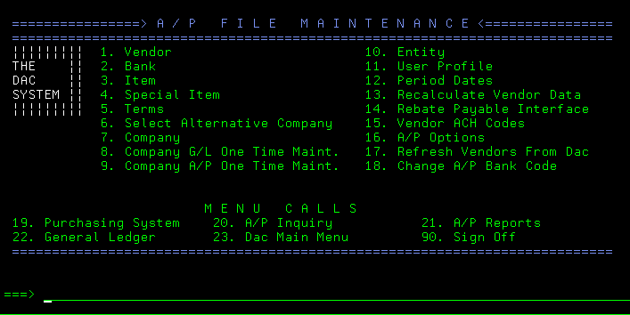

Accounts Payable
Before getting started with DAC Accounts Payable (A/P) System, users should refer to the Introduction of the Getting Started document for information about DAC data, screens and menus.

After selecting option 11 (Accounts Payable) of the DAC Main Operations Menu screen, the Accounts Payable screen appears.

Users can press <F3> to redisplay the Main Operations Menu screen.
Refer to the Accounts Payable Quick Reference Guide for an overview of the use of the Accounts Payable System.
For information about transferring purchase orders to Accounts Payable, and the report which is printed when transfers occur, refer to Transferring Purchase Orders To Accounts Payable of the Purchasing document.
Getting started with Accounts Payable
The steps below are followed to create the necessary records before the Accounts Payable System is used. If the DAC General Ledger System is used (or only the General Ledger account numbers are used), the steps below must not be taken until:
-
The cost center number(s) and General Ledger account numbers are defined. Refer to the General Ledger document for information about using the G/L File Maintenance applications to add cost center and G/L account records.
-
The cost center number(s) and General Ledger account numbers are combined using the Work With Cost Center application.
Note: The General Ledger System is used by selecting option 22 (General Ledger) of the Accounts Payable screen, or by selecting option 12 (General Ledger) of the DAC Main Operations Menu screen.
Step 1: Use the Work With System Options application to make any necessary changes to the value of the default system option record fields related to Accounts Payable. Refer to the DAC Default System Options document for information about the A/P Interface Active? and A/P Terms Positions Used fields of the SYS005 default system option, and the Accounts Payable Active? field of the SYS015 default system option.
Step 2: Use the Company Maintenance screens to add preliminary data, such as name and address, of the company. Multiple companies must be set up if users track retained earnings or net profit and loss for more than one entity, such as multiple warehouses or divisions. Refer to Working With Company Records for additional information.
Note: This step is not necessary if the company records were previously added using the General Ledger System.
Step 3: Use the User Profile Maintenance screen to designate the names of A/P users, and with which company each user works. Refer to Working With User Profile Records for additional information. >Note: This step is not necessary if the user profile records were previously added using the General Ledger System.
Step 4: Sign off the DAC system, then sign back on.
Step 5: Use the Company Maintenance (A/P) screen to add company A/P data, such as the aging method used by a company. Refer to Working With Company A/POptions for additional information.
Step 6: Use the Company Maintenance (G/L) screen to add company G/L data if General Ledger account numbers are used. Refer to Working With Company G/L Options for additional information.
Note: This step is not necessary if the company G/L options were previously added using the General Ledger System.
Step 7: Use the Period Date Maintenance screen to add period date data. Refer to Working With Period Date Records for additional information.
Note: This step is not necessary if the period date records were previously added using the General Ledger System
Step 8: Use the Period Date Inquiry screen to verify the starting and ending dates of the periods (also referred to as months) of the users fiscal year. Refer to Displaying Period Date Records for additional information.
Step 9: Use the Period Status Inquiry screen to verify the A/P open status for the periods of the users fiscal year. Refer to Displaying Period Status Records for additional information.
Step 10: Contact CDR support personnel who will assist users with the execution of the Company A/P One Time Maintenance application.
Step 11: Use the Bank Maintenance screen to add bank data. Refer to Working With Bank Records for additional information.
Step 12: Use the Vendor Terms Maintenance screen to add terms data. Refer to Working With Terms Records for additional information.
Step 13: Use the Vendor Maintenance screen to add vendor data. Refer to Working With Vendor Records for additional information.
Step 14: Use the Item Maintenance screen to add A/P item data. Refer to Working With A/P Item Records for additional information.
Step 15: Use the Work With A/P Options screen to designate various defaults (company, terms, bank and pay date) and A/P related options. Refer to Working With A/P Options for additional information.
Step 16: Use the Vendor Maintenance screen to add data concerning recurring payments. Refer to Working With Recurring Invoice Records for additional information.
Note: The Special Item application (option 4 of the A/P File Maintenance screen) and Entity application (option 10 of the A/P File Maintenance screen) are no longer used due to system upgrades.
Refer to the Accounts Payable Quick Reference Guide for an overview of the use of the Accounts Payable System
Accounts Payable and General Ledger Account Numbers
If the DAC General Ledger (G/L) System is used, credit and debit journal entries are created when invoice batches are posted and payments are processed.
Posting invoice batches
The General Ledger account number which is credited when invoice batches are posted is designated by the A/P account number field (see below) of the company A/P options

Refer to Working With Company A/P Options for additional information.
The various G/L account numbers which are debited when invoice batches are posted are designated by a user-named field (see below) of the A/P item records. Refer to Working With A/P Item Records for additional information 
Note: The specific name of this A/P item record field is designated by the value of the Account header field (see below) of a companys G/L options. Refer to Working With Company G/L Options for additional information.

When invoice batches are posted, a single debit journal entry is created in G/L for each detail line of an invoice. Refer to Working With Company A/P Options for information about the:
-
Inv jrnl entry method field which is used to designate if a single credit journal entry is created for each invoice of a batch, or for the entire batch.
-
Dates used for debit and credit journal entries when posting invoice batches.
Processing Payments
Payment processing includes:
- Using the Print Checks application to print checks for a payment batch.
- Using the Process Manual Payments application to enter data concerning payments made with hand-written checks.
- Using the Process EFT Payments application to enter data concerning payments made with electronic funds transfers (EFTs).
The General Ledger account number which is debited when payments are processed is designated by the A/P account number field (see below) of the company A/P options.
Refer to Working With Company A/P Options for additional information. The G/L account numbers which are credited when payments are processed (also referred to as the cash account number and the discount number) are designated by the following fields:
-
Cost Center and G/L Account # fields (see below) of the bank records. Refer to Working With Bank Records for additional information.

Note: The specific names of these bank record fields are designated by the values of the Cost cntr hdr and Account header fields of a companys G/L options (as described above)
-
Discount account field (see below) of the company A/P options.
Refer to Working With Company A/P Options for additional information.
When payments are processed, a single credit journal entry is created in G/L (for both the cash account number and the discount number) for each individual payment (printed check, manually-written check and EFT transaction).
Refer to Working With Company A/P Options for information about the:
-
Pmt jrnl entry method field which is used to designate if a single debit journal entry is created for each payment of a batch, or for the entire batch when printing checks. >Note: A single debit journal entry is created for each manual check and each EFT processed.
-
Dates used for debit and credit journal entries when processing payments.
Working with Accounts Payable File Maintenance
The Accounts Payable File Maintenance applications are used to create:
| Company Records | Terms Records |
| User Profile Records | Vebdor Records |
| Company A/P Options | A/P Item Records |
| Company G/L Options | A/P Options |
| Period Date Records | Recurring Invoices Records |
| Bank Records | |
After selecting option 11 from the Main Operations Menu screen, the Accounts Payable screen appears.

After selecting option 20 (A/P File Maint.) from the Accounts Payable screen, the A/P File Maintenance screen appears.

Working With Company Records
The Company Maintenance screen is used to add at least one company record before the Accounts Payable System is used. Multiple companies must be set up if users track retained earnings or net profit and loss for more than one entity, such as multiple warehouses or divisions. Refer to Working With Company G/L Options for additional information.
-
Select option 7 (Company) from the A/P File Maintenance screen. The Company Maintenance (Change) screen appears.

-
If necessary, enter ? for the Company (3,a) field and press <Enter> to display a list of the previously added company records on the Company Selection screen.If desired, 1 (Select Request) can be entered in the selection column to display, edit or delete a company record, or the user can press <F3> to display the Company Maintenance (Add) screen.
-
If necessary, press <F9> (Go to 'Add' mode) to display the Company Maintenance (Add) screen.
-
To add a new company record, enter a company code for the Company (3,a) field.
-
Press <Enter>. The Company Maintenance screen is redisplayed.
-
Enter data for the following fields:\ Name (40,a) - the name of the company.\ Address line 1 (30,a) - the companys street number and street name, or post office box number.\ Optional: Address line 2 (30,a) - remaining portion of the companys address, such as post office box number if not entered for Address Line 1.\ City (20,a) - the city of the companys mailing address.\ State (2,a) - the state of the companys mailing address.\ Postal code (5-9,n) - the zip code and 4-digit extension of the companys mailing address.\ Optional: Phone number (10,n) - the companys area code and telephone number.\ Optional: Fax number (10,n) - the companys area code and telephone number for fax transmission\
-
Enter Y (yes) for the G/L interface (1,a) field to designate that Accounts Payable data is transferred automatically to General Ledger. If the DAC General Ledger System is not used, enter N (no). > Note: If the General Ledger System is not used, but chart of account numbers that are created using the General Ledger System are used, Y must be entered for the G/L interface field.
-
Press <Enter> when prompted to confirm. The Record added message appears at the bottom of the Company Maintenance screen.
-
Press <F3> to exit. The A/P File Maintenance screen appears.\ Refer to Working With General Ledger Reports of the General Ledger document for information about printing a complete list of companies.
Working With User Profile Records
After company records are added, the User Profile Maintenance screen is used to add user profile records which designate the company with which each user works. The designated company will be automatically selected when a user signs on.
Refer to Selecting An Alternative Company for information about using the Select Alternative Company application to work with a different company.
Refer to Selecting The Default Company for information about using the Select Default Company application to resume working with the default company when work with an alternative company is complete.
- Select option 11 (User Profile) from the A/P File Maintenance screen. The User Profile Maintenance (Add) screen appears without values for the User, User name, Cmp and Company name fields if no user profile records have been added.
- If necessary, press <F9> (Go to 'Add' mode) to display the User Profile Maintenance (Add) screen.
-
Enter data for the following fields for each user: User (10,a) - the username which the user enters to sign on the system.\ User name (30,a) - the users name.\ Cmp (3,a) - a company code designating the users default company. If necessary, enter ? and press <Enter> to select a company code from the Company Selection screen.\ >Note: If the value of the Cmp field is later changed in the user profile record of a user who is currently signed on, that user must sign off and sign on before the change takes affect.
-
Press <Enter> and <F9> (Go to 'Change' mode) when data entry is complete. The User Profile Maintenance (Change) screen appears.
-
To delete a user profile record, enter 4 (Delete request) in the selection column of the desired record, and press <Enter>. Press <Page Down> or use the User restrictor field at the top of the screen to locate the desired record.
-
Press <F3> to exit. The A/P File Maintenance screen appears.
Selecting An Alternative Company
After a user signs on, the Select Alternative Company application can be used to work with a company other than the users default company.\
Refer to Selecting The Default Company for information about using the Select Default Company application to resume working with the default company when work with an alternative company is complete.
- Select option 6 (Select Alternative Company) from the A/P File Maintenance screen. The Select Alternative Company screen appears.
- Enter 1 (Select) in the selection column next to the company code of the desired company, and press <Enter>. The Your current company code is now ### message appears designating the alternative company selected.
- Press <F3> to exit. The A/P File Maintenance screen appears.
Selecting The Default Company
After working with an alternative company, the Select Default Company application is used to resume working with the users default company. Refer to Working With User Profile Records for information about designating each users default company.
Select option 7 (Select Default Company) from the Accounts Payable screen. The The default company has been selected message appears.
Working With Company A/P Options
After company records are added, the values of several A/P options must be designated for each company.
If necessary, the Select Alternative Company application can be used before working with company A/P options to allow the user to work with a company other than the users default company. Refer to Selecting An Alternative Company for additional information.
- Select option 7 (Company) from the A/P File Maintenance screen. The Company Maintenance screen appears.
- Enter the company code of the desired company and press <Enter>, or enter ? for the Company field and press <Enter> to select a company from the Company Selection screen.
- Press <F16> (<Shift> plus <F4>). The Company Maintenance (A/P) screen appears.
-
Enter one of the following values for the A/P aging method field:
- I designates that A/P aging is based on the invoice date. For example, if an invoice is dated November 1 with 30-day terms, the invoice is considered 1 day past due on December 2.
- D designates that A/P aging is based on the invoice due date. For example, if the due date is November 1 with 30-day terms, the invoice is considered 31 days past due on December 2.
- P designates that A/P aging is based on the posting date. For example, if the posting date is November 1 with 30-day terms, the invoice is considered 31 days past due on December 2.
The aging method is used to produce the A/P cash forecast report (entitled Vendor Aging Summary), and used to calculate the aging figures which appear on the Vendor Account Inquiry (Display) screen. 5. Enter the number of days past the date on which an invoice no longer has a remaining balance for the Days to hold closed A/P (3,n) field. The recommended value is 30. It designates how long invoice records and payment records remain in the A/P current files. After this time elapses, the records are automatically saved in A/P history files when the Month End Close application is used. 6. Enter data for the following fields as necessary: - A/P aging bucket 1 name - a description of the first aging bucket, such as Current. - A/P aging bucket 1 days - the number of days which an invoice cannot exceed to be included in the first bucket. - Optional: A/P aging bucket 2 name - a description of the second aging bucket, such as 31 to 60. - Optional: A/P aging bucket 2 days - the number of days which an invoice cannot exceed to be included in the second bucket. - Optional: A/P aging bucket 3 name - a description of the third aging bucket, such as 61 to 90. - Optional: A/P aging bucket 3 days - the number of days which an invoice cannot exceed to be included in the third bucket. - Optional: A/P aging bucket 4 name - a description of the fourth aging bucket, such as 91 - 120. - Optional: A/P aging bucket 4 days - the number of days which an invoice cannot exceed to be included in the fourth bucket. > Note: When using the Vendor Account Inquiry application to display four columns of aging figures, the amount calculate for the fourth bucket is combined with the fifth bucket, and displayed in the far right column of the screen. - Optional: A/P aging bucket 5 name - a description of the fifth aging bucket, such as 121+. - Optional: A/P aging bucket 5 days - enter 999 for the number of days which an invoice cannot exceed to be included in the fifth bucket. >Note: When using the Vendor Account Inquiry application to display four columns of aging figures, the amount calculate for the fifth bucket is combined with the fourth bucket, and displayed in the far right column of the screen. The values of the A/P aging fields are used to produce the A/P cash forecast report (entitled Vendor Aging Summary), and used to calculate the aging figures which appear on the Vendor Account Inquiry (Display) screen. 7. Enter Y (yes) for the Allow discount override field to enable the user to changethe values of the Discount and fields of the A/P Invoice Posting (Add) and (Change) screens, and the Discount field of the Payment Detail Maintenance screen. Refer to Adding An Invoice Batch, Adding A Payment Batch, Working With Manual Payments, and Working With EFT Payments for additional information. 8. Enter Y (yes) for the Allow detail payment change field to enable changing the amount of a payment when selecting invoices for payment. 9. Enter 1 for the Number of leader checks field to designate that the first check loaded in the printer is used when checks are printed. If a single check is wasted every time checks are printed, enter 2 for this field. If the first two checks are not used every time checks are printed, enter 3 for this field. 10. Enter one of the following values for the Inv jrnl entry method field:
- B designates that a single credit journal entry is created in General Ledger for the entire batch when an invoice batch is posted in Accounts Payable. Refer to Adding An Invoice Batch for information about using the Posting date field to post entries to the General Ledger.
- I designates that a credit journal entry is created in General Ledger for each invoice when an invoice batch is posted. Refer to Adding An Invoice Batch for information about using the Inv date field to post entries to the General Ledger.
-
Enter one of the following values for the Pmt jrnl entry method field:
- B designates that a single debit journal entry is created in General Ledger for the entire batch when a payment batch is posted in Accounts Payable.
- C designates that a debit journal entry is created in General Ledger for each payment when a payment batch is posted.\
Refer to Working With A/P Options for information about using the A/P Check field to designate which date is used for posting entries to the General Ledger.
-
Optional: Enter Y (yes) for the Reprint check numbers on preprinted checks field to print check numbers on checks that are pre-numbered, and verify that the correct check is being printed on the correct form.
-
If Y (yes) is entered for the G/L interface field of the companys record, data may be entered for the following fields:
- A/P account number - the cost center number and the liability account number which are credited when invoices are posted and debited when payments are made. Refer to Posting An Invoice Batch and Printing Checks And Check Register for additional information. The cost center number entered for the A/P account number field is also used as the default value when adding recurring invoice records and adding invoice batches. Refer to Working With Recurring Invoice Records and Adding An Invoice Batch for additional information.
- Discount account - the cost center number and the expense or income account number used for crediting discounts when payments are made.
Refer to Working With Company Records for additional information about the G/L interface field. Refer also to Working With A/P Item Records for information about the G/L Account # field, and to Working With Bank Records for information about the Cost Center and G/L Account # fields.
-
Press <Enter> when data entry is complete. The Record added message appears at the bottom of the Company Maintenance screen.
- Press <F3> to exit. The A/P File Maintenance screen appears.
Working With Company G/L Options
After company records are added, the values of several G/L options must be designated for each company if G/L account numbers are used. If necessary, the Select Alternative Company application can be used before working with company G/L options to allow the user to work with a company other than the users default company. Refer to Selecting An Alternative Company for additional information.
-
Select option 7 (Company) from the A/P File Maintenance screen. The Company Maintenance screen appears.
-
Enter the company code of the desired company and press <Enter>, or enter ? for the Company (3,a) field and press <Enter> to select a company from the Company Selection screen.
-
Press <F15> (G/L). The Company Maintenance (G/L) screen appears.
If the value of the Company field is changed (as illustrated above), the Select Alternative Company application must be used before continuing to work with the Company Maintenance (G/L) screen. In this case, press <F3> to exit, and refer toSelecting An Alternative Company for additional information.
If the value of the Company field is unchanged (as illustrated above), continue with the steps below to enter values for the fields of the Company Maintenance (G/L) screen.
-
Enter the text designating the companys cost centers, such as Cost Center, for the Cost cntr hdr (12,a) field. This text will appear as a field name on various A/P System screens (see the Bank Maintenance screen below), and as a column heading on various A/P System reports. Refer to the example of the A/P-G/L Transaction Register in the Posting An Invoice Batch section of this document.
-
Enter the text designating the companys General Ledger account numbers, such as G/L Account #, for the Account header (15,a) field. This text will appear as a field name on various A/P System screens (see the Bank Maintenance screen below), and as a column heading on various A/P System reports. Refer to the example of the A/P Invoice Transaction Register in the Posting An Invoice Batch section of this document.
-
Enter data for the following fields:
-
Optional: Suspense cost center/account - the cost center number (3+4,n) and the account number (5+4,n) used for the suspense total.
- Optional: Ret. earnings cost cntr/account - the cost center number (3+4,n) and the account number (5+4,n) used for the retained earnings total.
-
Optional: Profit/loss cost cntr/account - the cost center number (3+4,n) and the account number (5+4,n) used for the net profit/loss total.
-
Press <Enter> when data entry is complete. The Record added message appears at the bottom of the Company Maintenance screen.
-
Press <F3> to exit. The A/P File Maintenance screen appears.
In the example below, the field names Cost Center and G/L Account # appear on the Bank Maintenance screen because the values Cost Center and G/L Account # are entered for the Cost cntr hdr and Account header fields of the Company Maintenance (G/L) screen.
Working With Period Date Records
After the A/P related options are designated for each company, the periods (also referred to as months) of the users fiscal year are defined for each company.
The instructions below must be followed to define the next fiscal year prior to closing the current year. Refer to Closing A Year for additional information.
The instructions below may also be followed to ensure that the correct period is closed before using the Month End Close application. Refer to Closing A Month for additional information.
-
Select option 12 (Period Dates) from the A/P File Maintenance screen. The Period Date Maintenance screen appears.
-
Enter the last two digits of the desired fiscal year for the Period year (2,n) field.
-
Press <Enter>. The Period Date Maintenance (Add) screen appears if period dates have not yet been defined.\ The Period Date Maintenance (Change) screen appears for users to review previously defined period dates, and to ensure that the correct period is closed before pressing <F3> to exit, and using the Month End Close application.
-
Enter data for the following fields. If the user defines a month as a four week period, a value must be entered for all 13 Period...end date fields.
- Period 1 start date (6,n) - the date of the first day of the fiscal years first month.
- Period 1 end date (6,n) - the date of the last day of the fiscal years first month.
- Period 2 end date (6,n) - the date of the last day of the fiscal years second month.
- Period 3 end date (6,n) - the date of the last day of the fiscal years third month.
- Period 4 end date (6,n) - the date of the last day of the fiscal years fourth month.
- Period 5 end date (6,n) - the date of the last day of the fiscal years fifth month.
- Period 6 end date (6,n) - the date of the last day of the fiscal years sixth month.
- eriod 7 end date (6,n) - the date of the last day of the fiscal years seventh month.
- Period 8 end date (6,n) - the date of the last day of the fiscal years eighth month.
- Period 9 end date (6,n) - the date of the last day of the fiscal years ninth month.
- Period 10 end date (6,n) - the date of the last day of the fiscal years tenth month.
- Period 11 end date (6,n) - the date of the last day of the fiscal years eleventh month.
- Period 12 end date (6,n) - the date of the last day of the fiscal years twelfth month.
- Optional: Period 13 end date (6,n) - the date of the last day of the fiscal years last month is entered if the user defines a month as a four-week period.
-
Press <Enter> when data entry is complete.
-
Enter Y (yes) for the Confirm (1,a) field. The Period Date Maintenance (Enter) screen appears.
-
Press <F3> to exit. The A/P File Maintenance screen appears.
Working With Bank Records
After executing the Company A/P One Time Maintenance application (under the direction of CDR support personnel), the bank records are added. Refer to Working With Accounts Payable Reports for information about printing a list of banks.
-
Select option 2 (Bank) from the A/P File Maintenance screen. The Bank Maintenance (Change) screen appears.
-
If necessary, enter ? for the Bank code field and press <Enter> to display a list of the previously added bank records on the Bank Selection screen.
If desired, 1 (Select request) can be entered in the selection column to display, edit or delete a bank record, or the user can press <F3> to redisplay the Bank Maintenance screen.
-
If necessary, press <F9> (Go to 'Add' mode) to display the Bank Maintenance (Add) screen.
-
To add a new bank record, enter a bank code for the Bank code (6,a) field.
-
Press <Enter>. Note: The Cost Center and G/L Account # field names will be different if other values are entered for the Cost cntr hdr and Account header fields of the Company Maintenance (G/L) screen. Refer to Working With Company G/L Options for additional information.
-
Enter data for the following fields:
- Optional: Bank name (30,a) - the name of the bank.
- Optional: Bank account (20,a) - the bank account number.
- Bank Type (30,a) - the type, such as Checking or Payroll, of bank account.
- Optional: Forms code (6,a) - the text designating the forms used to print checks.
-
If the chart of account records created using the DAC General Ledger System are used, enter data for the following fields under the G/L cash account heading:
- Cost Center - the cost center number (3+4,n) which is used (with the account number described below) to designate the asset account number which is credited when payments are made.
- G/L Account # - the account number (5+4,n) which is used (with the cost center number described above) to designate the asset account number which is credited when payments are made.
Refer to Printing Checks And Check Register for additional information.
-
Press <Enter> when data entry is complete. The Record added message appears at the bottom of the Bank Maintenance screen.
-
Press <F3> to exit. The A/P File Maintenance screen appears.
Working With Terms Records
The instructions below must be followed to designate the payment terms for use with A/P vendor records. These payment terms records must include duplicate records corresponding to the payment terms records added for use with the Purchasing Systems vendor records. Refer to Working With Terms Definitions of the Customer File Maintenance document for information about adding the vendor payment terms for use with the Purchasing System.
Refer to the DAC Default System Options document for information about the A/P Terms Positions Used field of the SYS005 default system option (Accounting Options).
-
Select option 5 (Terms) from the A/P File Maintenance screen. The Vendor Terms Maintenance screen appears without values for any of the fields if no terms records have been previously added using Accounts Payable. If necessary, press <F9> (Go to 'Add' mode).
-
Enter data for the following fields as necessary:
- Terms code (2,a) - a 2-digit code to designate the type of the payment terms, such as 20 for net due in 20 days. The value entered for this field must duplicate the value entered for the Terms Code field of the corresponding record added for the Purchasing Systems vendor records.
- Terms code Description (25,a) - a description of the payment terms. The value entered for this field should duplicate the value entered for the Terms Code Description field of the corresponding record added with the Terms Definitions application.
-
Optional: Pmt due days (3,n) - the number of days in which payment must be received by the vendor before an invoice is considered past due. This value is added to the vendors invoice date to calculate the payment due date. If a value is not entered for this field, a value must be entered for the Pmt due dte field (see below).
The value entered for the Pmt due days field should duplicate the value entered for the Age Days field of the corresponding record added for the Purchasing Systems vendor records.
-
Optional: Disc due days (3,n) - the number of days in which payment must be received by the vendor before the distributor qualifies for a cash discount. This value is added to the vendors invoice date to calculate the discount due date. Refer to Working With A/P Options for information about using the Take A/P Disc If Past Due Date field to pay discounted payment amounts when invoices are past due.
To designate the discount due date as a specific day of each month, do not enter a value for the Disc due days field, and enter a value for the Disc due dte field (see below).
The value entered for the Disc due days field should duplicate the value entered for the Disc Days field of the corresponding record added for the Purchasing Systems vendor records.
-
Optional: Terms discount percent (5.2,n) - the discount percentage received from the vendor is used to calculate the discounted payment amount by multiplying the percentage by the amount due for only the items of vendors invoice which can be discounted. Refer to Working With A/P Item Records for information about the Discount Allowed field.
The value entered for the Terms discount percent field should duplicate the value entered for the Cash Disc. % field of the corresponding record added for the Purchasing Systems vendor records.
-
Optional: Pmt due dte (4,n) - the payment due date designated as a specific day of each month. The valid values are 9901 through 9931 (for the 1st through the 31st). Note: The 99 digits of these values are not related in any way to the year 1999.
If a value is not entered for the Pmt due dte field, a value must be entered for the Pmt due days field (see above).
-
Optional: Disc due dte (4,n) - the discount due date designated as a specific day of each month. The valid values are 9901 through 9931 (for the 1st through the 31st). Note: The 99 digits of these values are not related in any way to the year 1999.
To calculate the discount due date using a specific number of days, do not enter a value for the Disc due dte field, and enter a value for the Disc due days field (see above).
-
Optional: EFT Sts (1,a) - enter Y (yes) to designate that the default value of an invoices payment type is E for electronic file transfer (EFT) payment.
-
Press <Enter> when data entry is complete.
-
Press <F3> to exit. The A/P File Maintenance screen appears.
After the payment terms records are created, they are linked to vendor records by entering the value of the Terms code field of a terms record for the value of a A/P vendor records Terms code field. Refer to Working With Vendor Records for additional information.
Working With Vendor Records
After the terms records are added, the Vendor Maintenance and Vendor Maintenance Details screens are used to add vendor records.
If vendor records were previously created by using the Work With Vendors application of the Purchasing System, the Refresh Vendors From Dac application (option 17 of the A/P File Maintenance screen) can be used one time to initially copy those records to create the A/P vendor records. After using the Refresh Vendors From Dac application, users must edit the new A/P vendor records to enter data for the fields which are noted in the instructions below.
If necessary, CDR support personnel can include a function with the End Of Day (EOD) processing application which creates new A/P vendor records by copying only the Purchasing System vendor records added since EOD was last executed. Users would edit these new A/P vendor records also, as noted in the instructions.
The instructions given below, which describe adding and deleting a vendor record, can also be followed to edit a record.
-
Select option 1 (Vendor) from the A/P File Maintenance screen. The Vendor Maintenance screen appears with vendor records if any have been previously added.
During the course of adding a vendor record, the following options can be used:
-
2=Change - the Vendor Maintenance screen appears. The user can edit a vendor record by changing the values of the Vendor Maintenance screen, and pressing <Enter> to change the values of the Vendor Maintenance Details screen. Refer to the following instructions for additional information about the field of these screens.
-
5=Inquiry - the Vendor Inquiry screen appears. The user can review but not change the vendor information that appears on this screen. Refer to Working With Vendor Inquiry for additional information.
-
7=Recurring invoices - the Recurring Invoice Maintenance screen appears. Refer to Working With Recurring Invoice Records for additional information.
-
N=Notes - the Entity Notes Maint (A/P) screen appears which can be used to log miscellaneous information about a vendor.
-
-
Press <F6> (Add new vendor). The Vendor Maintenance KEY SCREEN screen appears.
-
Enter a vendor code for the Vendor (6,a) field. The value of the Vendor field can be used to print a list of vendors. Refer to Working With Accounts Payable Reports for additional information.
-
Press <Enter>. The Vendor Maintenance screen appears.
-
To add a vendor record, enter data for the following fields, as necessary:
- Name (30,a) - the vendors name. Refer to Working With Accounts Payable Reports for information about printing vendor file labels.
- Address line 1 (30,a) - first line of vendors address. Refer to Working With Accounts Payable Reports for information about printing vendor address labels.
- Optional: Address line 2 (30,a) - second line of vendors address.
- City (20,a) - the city of the vendors mailing address.
- State (2,a) - the state abbreviation of the vendors mailing address.
- Postal code (5-9,n) - the zip code and 4-digit extension of the vendors mailing address. If the vendor record was copied from the Purchasing Systems vendor record, the 4-digit extension does not appear, and must be entered by the A/P user.
- Optional: Phone number (10,n) - the vendors area code and telephone number.
- Optional: Fax number (10,n) - the vendors area code and telephone number for fax transmission.
- Optional: Alpha code (15,a) - text used to alphabetically display and select vendors on screens. It can also be used for sorting vendors when printing a vendor list. Refer to Adjusting A Posted Invoice, Working With Vendor Account Inquiry, Working With Vendor Account Inquiry History, Working With Vendor Alpha Inquiry and Printing Vendor Lists for additional information.
The last name and first name, such as EARNHARDT DALE, could be used for an individual. The significant part of a companys name, such as HOME DEPOT for The Home Depot, could be used.
-
Press <Enter>. The Vendor Maintenance Details screen appears.
-
To delete the vendor record, press <F11> (Delete). The Record changed message appears at the bottom of the Vendor Maintenance KEY SCREEN screen. The user can press <F3> to exit, or continue adding (or deleting) vendor records.
-
To continue adding the vendor record, enter data for the following fields of the Vendor Maintenance Details screen:
- Optional: Contact name (30,a) - the name of the vendor employee with whom the user primarily communicates.
- Optional: Corporate vendor (6,a) - a vendor code previously defined by the user to designate an associated vendor. If necessary, enter ? and press <Enter> to select a vendor code from the Vendor Select screen. This field is not required for using DAC directly, but provided for the informational purposes of the user. If the vendor record was copied from the Purchasing Systems vendor record, no value appears for this field, and must be entered by the A/P user if necessary.
-
Optional: Remit-to vendor (6,a) - a vendor code previously defined by the user to designate the business or individual to whom payments will be made. If necessary, enter ? and press <Enter> to select a vendor code from the Vendor Select screen. If the vendor record was copied from the Purchasing Systems vendor record, no value appears for this field, and must be entered by the A/P user if necessary.
-
Optional: Type code (2,a) - a code which is not previously defined by the user, and not associated with a DAC master file. The value of the Type code field can be used to print a list of vendors. Refer to Working With Accounts Payable Reports for additional information. If the vendor record was copied from the Purchasing Systems vendor record, no value appears for this field, and must be entered by the A/P user if necessary.
-
Bank code (6,a) - a bank code previously defined by the user with the Bank Maintenance screen. If necessary, enter ? and press <Enter> to select a bank code from the Bank Selection screen. If the vendor record was copied from the Purchasing Systems vendor record, the value of this field will default from the Default bank code field of the General A/P Options Details screen. Refer to Working With A/P Options for additional information.
-
Terms code (2,a) - a terms code previously defined by the user with the Terms Code Maintenance screen. If necessary, enter ? and press <Enter> to select a terms code from the Vendor Terms Select screen. If the vendor record was copied from the Purchasing Systems vendor record, the value of this field will default from the Default terms code field of the General A/P Options Details screen. Refer to Working With A/P Options for additional information.
-
Optional: 1099 code (6,a) - text printed on the A/P Vendor 1099 Report. Refer to Printing A Vendor 1099 Report for additional information. If the 1099 code field is left blank, the vendor will not be included on the report. If the vendor record was copied from the Purchasing Systems vendor record, no value appears for this field, and must be entered by the A/P user if necessary.
-
Optional: Tax ID (11,a) - the vendors federal tax identification number which appears on the Vendor 1099 Report. If the vendor record was copied from the Purchasing Systems vendor record, no value appears for this field, and must be entered by the A/P user if necessary.
-
Allow payment (1,a) - the default value of Y (yes) designates that the vendors invoices are not withheld when select invoices for payment. Refer to Editing A Payment Batch for additional information. If the vendor record was copied from the Purchasing Systems vendor record, no value appears for this field, and must be entered by the A/P user if necessary.
-
Critical payment (1,a) - the default value of N (no) designates that payments to the vendor need not be made in a timely manner. Enter Y (yes) to designate otherwise. This field is not required for using DAC directly, but provided for the informational purposes of the user. If the vendor record was copied from the Purchasing Systems vendor record, no value appears for this field, and must be entered by the A/P user if necessary.
-
Optional: Minimum order value (11.2,n) - designates the minimum dollar value which must be purchased from the vendor. This field is not required for using DAC directly, but provided for the informational purposes of the user. If the vendor record was copied from the Purchasing Systems vendor record, no value appears for this field, and must be entered by the A/P user if necessary.
Note: If a value is entered for the Minimum order value field, a higher value must be entered for the Maximum order value field (see below).
-
Optional: Maximum order value (11.2,n) - designates the maximum dollar value which can be purchased from the vendor. This field is not required for using DAC directly, but provided for the informational purposes of the user. If the vendor record was copied from the Purchasing Systems vendor record, no value appears for this field, and must be entered by the A/P user if necessary.
Note: A value must be entered for the Maximum order value field if a value is entered for the Minimum order value field (see above). 9. Press <Enter> when data entry is complete. The Vendor Maintenance KEY SCREEN screen appears with the Record added message.
-
Press <F3> to exit. The Vendor Maintenance screen appears.
Vendor Record Worksheet
Vendor Maintenance KEY SCREEN and Vendor Maintenance screens
Vendor*(6,a) ___
Name*(30,a) ____
Address line 1*(30,a) ____
Address line 2*(30,a) ____
City(20,a) ____ State(2,a) ____
Postal code*(5-9,n) ____
Phone number*(10,n) ____
Fax number*(10,n) ____
Alpha code (15,a) ____
(Vendor Maintenance Details screen)
Contact name* (30,a) ____
Corporate vendor (6,a) _______
Remit-to vendor (6,a) _______
Type code (2,a) ____
Bank code (6,a) _______
Terms Code*(2,a) ____
1099 code (6,a) _______
Tax ID (11,a) ________
Allow payment (1,a) ______
Critical payment (1,a) ______
Minimum order value (11.2,n) _______
Maximum order value (11.2,n) _______
Note: Data entry is strongly recommended, or required by the system, for the fields displayed in bold type above. The data entered for the fields marked above with an asterisk (*) is copied from the Purchasing System vendor's record.
Working with A/P Item Records
After the vendor records are added, the Item Maintenance Details screen is used to add Accounts Payable (A/P) item records. The instructions given below, which describe adding and deleting an A/P item record, can also be followed to edit a record.
Accounts Payable item records are used to link A/P transactions with General Ledger (G/L) account numbers; therefore, an A/P item record must be created for each G/L account number that will be debited during invoice posting.
If DAC Purchasing System is used, A/P item records must be created to link purchasing transactions with the appropriate G/L account number.
If any PO off invoice deduction (5) type of vendor deal is used, the VRDEAL5 A/P item record must be added. If any item allow-OI deduction (4) type of vendor deal is used, the VRDEAL4 A/P item record must be added.
Refer to Working With Accounts Payable Reports for information about printing a list of A/P item records.
-
Select option 3 (Item) from the A/P File Maintenance screen. The Item Maintenance screen appears with A/P item records if any have been previously added.
During the course of adding an A/P item record, the following options can be used: - 2=Change - the Item Maintenance Details screen appears. The user can edit an A/P item record by changing the values of the screens fields. Refer to the following instructions for additional information about these fields. - 5=Inquiry - the Item Inquiry screen appears. The user can review but not change the A/P item information that appears on this screen. Refer to Working With Item Inquiry for additional information.
-
Press <F6> (Add new item). The Item Maintenance KEY SCREEN screen appears.
-
Enter an item code for the Item code (15,a) field. To add an A/P item record for each of the G/L accounts that will be debited during invoice posting, users may enter the chart of account numbers for the Item code field. For example, if 890 is the G/L account number for bank charges, 890 would be entered for the Item code field of the corresponding A/P item record.
To add an A/P item record for transferring purchase orders to Accounts Payable, enter INVENTORY and an item category number for the Item code field. Valid values are INVENTORY01 through INVENTORY99.
Note: Though an A/P item record should be added for every item category number used by the distributor, a single A/P item record can be added by using the value of INVENTORY without a category number for the Item code field.
To use any PO off invoice deduction (5) type of vendor deal, enter VRDEAL5 for the Item code field. To use any item allow-OI deduction (4) type of vendor deal, enter VRDEAL4 for the Item Code field. Refer to Adding PO Off Invoice Deduction Deals and Adding Item Allow-OI Deduction Deals of the Vendor Receivables document for additional information.
The value of the Item code field is also used to designate a tobacco product when printing the Tobacco Invoice Report. Refer to Working With Accounts Payable Reports for additional information.
Refer to Printing An Accounts Payable Item List to review examples of A/P item records.
-
Press <Enter>. The Item Maintenance Details screen appears.
>Note: The G/L Account # field name will be different if another value is entered for the Account header field of the Company Maintenance (G/L) screen. Refer to Working With Company G/L Options for additional information. -
To delete the A/P item record, press <F11> (Delete). The Item Maintenance screen appears without the deleted A/P item record.
-
To continue adding the A/P item record, enter data for the following fields of the Item Maintenance Details screen:
- Description (30,a) - the description of the item. If necessary, the user can override this value when it appears during invoice entry.
- Discount allowed (1,a) - the default value of Y (yes) designates that a discount can be taken on the item. If necessary, the user can override this value when it appears during invoice entry.
- Optional: Actual cost (7.2,n) - this field is left blank.
- Optional: List price (7.2,n) - this field is left blank.
- G/L Account # (5+4,n) - the account number that is debited in General Ledger when invoices are posted. Refer to Working With Company A/P Options for information about the A/P account number field.
To add an A/P item record for transferring purchase orders to Accounts Payable, enter an account number for the G/L Account # field. If necessary, the user can override this value when it appears during invoice entry.
-
Press <Enter> when data entry is complete. The Record added message appears at the bottom of the Item Maintenance KEY SCREEN screen.
-
Press <F3> to exit. The Item Maintenance screen appears
Working with A/P Options
The step-by-step instructions which follow describe using the General A/P Options Details screen to designate various A/P defaults options. After the A/P System operation is begun, these options should not be changed without first consulting CDR support personnel, and using extreme caution.
Refer to the DAC Default System Options document for information about the A/P related fields of the SYS005 Accounting options.
-
Select option 16 (A/P Options) from the A/P File Maintenance screen. The Work With A/P Options screen appears.
-
Enter 2 (Edit Record) in the selection column next to AP0001 (General A/P Options 1), and press <Enter>. The General A/P Options Details screen appears.
-
Enter a company code for the Default Company Number (3,a) field. The default company code is used if purchase orders are transferred to A/P. Refer to Transferring Purchase Orders to Accounts Payable of the Purchasing document for additional information. The default company code is also used if vendor records are copied from Purchasing. Refer to Working With Vendor Records for additional information.
If necessary, press <F4> to select a default company code from the Company Selection screen. If <F4> is used, enter N (no) for the Confirm field of the General A/P Options Details screen to continue entering values.
-
Enter a terms code for the Default Terms Code (2,a) field. The default terms code is used if no payment terms is available for a vendors invoice when purchase orders are transferred to A/P. Refer to Transferring Purchase Orders to Accounts Payable of the Purchasing document for additional information. The default terms code is also used if vendor records are copied from Purchasing. Refer to Working With Vendor Records for additional information.
-
Enter a bank code for the Default Bank Code (6,a) field. The default bank code is used for processing payments, and is also used if vendor records are copied from Purchasing.
-
Enter one of the following values for the Default Pay Date From (1,a) field to designate which date is used by default as an invoices pay date if the pay date is not entered when the invoice is created (or transferred from Purchasing):
- 1 - the invoices due date is used for the pay date.
-
2 - if a discount date is calculated for the invoice, it is used for the pay date; otherwise the invoices due date is used for the pay date.
Refer to the following sections for additional information about the fields used to calculate the due date and discount date: - Working With Terms Records for information about Pmt due days, Pmt due dte, Disc due days and Disc due dte fields.
-
Adding An Invoice Batch for information about the Inv date and Due date fields.
- Transferring Purchase Orders to Accounts Payable of the Purchasing document for information about the Invoice Date, Due and Pay fields of the Prompt Header Information screen.
-
Enter one of the following values for the Take Disc If Past Due Dte (1,a) field to designate if a discounted payment amount is paid to vendors:
- 1 - discounted payment amounts are not paid to vendors when invoices are past due.
- 2 - discounted payment amounts are paid to vendors when invoices are past due. Refer to Working With Terms Records for information about the Terms discount percent field.
-
Enter one of the following values for the A/P Check Date (2,a) field. With the exception described in the note below, the value of the A/P Check Date field designates 1) which date is used for posting entries to the General Ledger, 2) which date is printed on checks, and 3) how many checks are printed per vendor:
-
BP- the value entered for the Check date field when printing checks is used for posting payments to the payment journal, and is printed on checks. Refer to Printing Checks And Check Register for information about the Check date field of the A/P Check Print Prompt screen.
If BP is entered for the A/P Check Date field, the default value of the A/P Check Version field on the A/P Check Print Prompt screen is 1 which designates that one check is printed per vendor. Refer to Printing Checks And Check Register for information about the A/P Check Version field.
When printing checks, users can change the default value of the A/P Check Version field to 2 which designates that one check is printed for each voucher of each vendor.
Note: If 2 is entered for the A/P Check Version field, multiple reference lines cannot be printed on a check stub. Refer to Printing Multiple Reference Lines for additional information.
-
PD - the value of the Pay Date field is used for posting payments to the payment journal, and is printed on checks. Refer to Adding A Payment Batch for information about the Pay Date field of the A/P Payment Selection screen. Refer also to Adding An Invoice Batch for information about the Pay date field of the A/P Invoice Posting (Add) screen.
If PD is entered for the A/P Check Date field, the default value of the A/P Check Version field is 3 on the A/P Check Print Prompt screen which designates that one check will be printed per vendor per pay date. Refer to Printing Checks And Check Register for information about the A/P Check Version field.
Note: The value of the Pay Date field is used for posting payments to the payment journal, regardless of the value entered for the A/P Check Date field, when payments are made with either hand-written checks or electronic funds transfers (EFTs). Refer to Working With Manual Payments and Working With EFT Payments for information about the Check date and Selection Date fields, respectively.
-
-
If using General Ledger custom reports, 22 can be entered for the G/L Custom Report Heading (2,a) field to print one or two additional lines of text with the report headings. Refer to Working With G/L Report Records of the General Ledger document for information about using the 1 and 2 fields of the G/L ReportMaintenance screen when defining a custom report. If the G/L Custom Report Heading field is left blank, or 11 is entered, the report heading will include the company name, but not the additional text.
-
Enter YES* for the Restrict AP Batch To User** (6,a) field if purchase orders are transferred to Accounts Payable. A DAC/CV1 Object Lock message appears if others are using Accounts Payable at the time a user attempts to transfer purchase orders. Refer to Transferring Purchase Orders to Accounts Payable of the Purchasing document for additional information.
-
If multiple cost centers exist, enter a cost center number for the Default Cost Center (3,n) field. Contact CDR support personnel for additional information.
-
Enter *YES for the Condensed Written Chk V3 (6,a) field if PD is entered for the A/P Check Date field above, and additional space is needed to print the written amount on checks.
-
Enter the device name of the users tape drive for the Device Name (EOY Backup) (30,a) field. The data files of the DACACTDATA library are automatically saved to a tape cartridge during General Ledger end of year processing.
-
Press <Enter> when data entry is complete.
-
Press <Enter> when prompted to confirm. The Work With A/P Options screen appears.
-
Enter 2 (Edit Record) in the selection column next to AP0002 (A/P System Options 1), and press <Enter>. The General A/P Options Details screen appears.
-
Enter YES for the A/P Auto Tape Recon (3,a) field if monthly reconciliation with the bank is handled electronically. Contact CDR personnel for additional information.
-
Enter Y for the Print A/P Remittance Rpt (1,a) field to print a remittance report, similar to a check stub, for EFT payments.
- Enter Y (yes) for the GL Act# on AP Chk Reg-Y/N (1,a) field to designate that the account numbers which are debited in the General Ledger (when posting invoices) are printed on the check register. Refer to Working With A/P Item Records for information about the G/L Acct Number field which is used to designate these account numbers.
- If A/P laser printer checks are used, enter one of the following values for the A/P Laser Check?(No/1/2) (1,a) field to designate the type of printer used. If the continous form check is used, enter N (no). Refer to the A/P Check Forms document for additional information.
- 1 a printer with IPDS (intelligent printer data stream) capability is used for printing the checks.
- 2 a printer without IPDS capability is used for printing the checks.
- Enter Y (yes) for the Use GL hdr desc 2 for dtl (1,a) field to designate that text entered for the Desc 2 field of the Journal Entry screen is printed as the journl entrys detail information; otherwise, the account name/description from the chart of account is used.
- Enter *YES for the Print Invoice Entry Edit (6,a) field to designate that the Invoice Entry Edit List is automatically printed when an A/P invoice batch is posted.
- Enter *YES for the Allow Auto EFT & Man Chks (6,a) field to designate that EFT and manual check payments can be automatically posted when users enter vendor invoices. Refer to Automatically Posting Manual Payments and Automatically Posting EFT Payments for additional information.
- Press <Enter>.
- Press <Enter> when prompted to confirm. The Work With A/P Options screen appears.